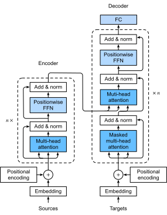

Kiến Trúc Transformer¶
Chúng ta đã so sánh CNN, RNN và self-attention trong subsec_cnn-rnn-self-attention. Đáng chú ý là self-attention có cả tính toán song song và độ dài đường dẫn tối đa ngắn nhất. Do đó, thật hấp dẫn khi thiết kế các kiến trúc sâu bằng cách sử dụng self-attention. Không giống như các mô hình self-attention trước đây vẫn dựa vào RNN cho các biểu diễn đầu vào [Cheng.Dong.Lapata.2016, Lin.Feng.Santos.ea.2017, Paulus.Xiong.Socher.2017], mô hình Transformer chỉ dựa trên các cơ chế attention không có bất kỳ lớp tích chập hay hồi tiếp nào [Vaswani.Shazeer.Parmar.ea.2017]. Mặc dù ban đầu được đề xuất cho học chuỗi-sang-chuỗi trên dữ liệu văn bản, Transformer đã được phổ biến rộng rãi trong nhiều ứng dụng deep learning hiện đại, chẳng hạn như trong các lĩnh vực liên quan đến ngôn ngữ, thị giác, giọng nói và học tăng cường.
Mô Hình¶
Là một thể hiện của kiến trúc mã hóa--giải mã, kiến trúc tổng thể của Transformer được trình bày trong fig_transformer. Như chúng ta có thể thấy, Transformer được tạo thành từ một bộ mã hóa và một bộ giải mã. Ngược lại với attention Bahdanau cho học chuỗi-sang-chuỗi trong fig_s2s_attention_details, các embedding chuỗi đầu vào (nguồn) và đầu ra (mục tiêu) được cộng thêm mã hóa vị trí trước khi được đưa vào bộ mã hóa và bộ giải mã có các mô-đun xếp chồng dựa trên self-attention.

:width:320px
Bây giờ chúng ta cung cấp tổng quan về kiến trúc Transformer trong fig_transformer. Ở cấp độ cao, bộ mã hóa Transformer là một ngăn xếp nhiều lớp giống hệt nhau, trong đó mỗi lớp có hai lớp con (mỗi lớp được ký hiệu là \(\textrm{sublayer}\)). Lớp đầu tiên là attention pooling self-attention đa đầu và lớp thứ hai là mạng feed-forward theo vị trí. Cụ thể, trong self-attention của bộ mã hóa, các query, key và value đều từ đầu ra của lớp bộ mã hóa trước. Lấy cảm hứng từ thiết kế ResNet trong sec_resnet, kết nối phần dư được sử dụng xung quanh cả hai lớp con. Trong Transformer, với bất kỳ đầu vào \(\mathbf{x} \in \mathbb{R}^d\) tại bất kỳ vị trí nào của chuỗi, chúng ta yêu cầu rằng \(\textrm{sublayer}(\mathbf{x}) \in \mathbb{R}^d\) để kết nối phần dư \(\mathbf{x} + \textrm{sublayer}(\mathbf{x}) \in \mathbb{R}^d\) là khả thi. Phép cộng từ kết nối phần dư này ngay lập tức được theo sau bởi chuẩn hóa lớp [Ba.Kiros.Hinton.2016]. Kết quả là, bộ mã hóa Transformer xuất ra một biểu diễn vector \(d\) chiều cho mỗi vị trí của chuỗi đầu vào.
Bộ giải mã Transformer cũng là một ngăn xếp nhiều lớp giống hệt nhau với các kết nối phần dư và chuẩn hóa lớp. Ngoài hai lớp con được mô tả trong bộ mã hóa, bộ giải mã chèn một lớp con thứ ba, được gọi là attention mã hóa--giải mã, giữa hai lớp này. Trong attention mã hóa--giải mã, các query đến từ đầu ra của lớp con self-attention của bộ giải mã, và các key và value là từ các đầu ra của bộ mã hóa Transformer. Trong self-attention của bộ giải mã, các query, key và value đều từ đầu ra của lớp bộ giải mã trước. Tuy nhiên, mỗi vị trí trong bộ giải mã chỉ được phép chú ý đến tất cả các vị trí trong bộ giải mã tính đến vị trí đó. Attention được che này bảo tồn thuộc tính tự hồi quy, đảm bảo rằng dự đoán chỉ phụ thuộc vào những token đầu ra đã được tạo ra.
Chúng ta đã mô tả và triển khai attention đa đầu dựa trên tích vô hướng có tỷ lệ trong sec_multihead-attention và mã hóa vị trí trong subsec_positional-encoding. Trong phần sau, chúng ta sẽ triển khai phần còn lại của mô hình Transformer.
[Mạng Feed-Forward Theo Vị Trí]¶
Mạng feed-forward theo vị trí biến đổi
biểu diễn tại tất cả các vị trí chuỗi
sử dụng cùng một MLP.
Đây là lý do tại sao chúng ta gọi nó là theo vị trí.
Trong triển khai dưới đây,
đầu vào X có hình dạng
(kích thước batch, số bước thời gian hoặc độ dài chuỗi theo token,
số đơn vị ẩn hoặc chiều đặc trưng)
sẽ được biến đổi bởi một MLP hai lớp thành
một tensor đầu ra có hình dạng
(kích thước batch, số bước thời gian, ffn_num_outputs).
class PositionWiseFFN(nn.Module):
"""The positionwise feed-forward network."""
def __init__(self, ffn_num_hiddens, ffn_num_outputs):
super().__init__()
self.dense1 = nn.LazyLinear(ffn_num_hiddens)
self.relu = nn.ReLU()
self.dense2 = nn.LazyLinear(ffn_num_outputs)
def forward(self, X):
return self.dense2(self.relu(self.dense1(X)))
Ví dụ sau cho thấy rằng [chiều trong cùng của một tensor thay đổi] thành số đầu ra trong mạng feed-forward theo vị trí. Vì cùng một MLP biến đổi tại tất cả các vị trí, khi các đầu vào tại tất cả các vị trí này là giống nhau, các đầu ra của chúng cũng giống hệt nhau.
Kết Nối Phần Dư và Chuẩn Hóa Lớp¶
Bây giờ hãy tập trung vào thành phần "cộng và chuẩn hóa" trong fig_transformer. Như chúng ta đã mô tả ở đầu phần này, đây là một kết nối phần dư ngay lập tức được theo sau bởi chuẩn hóa lớp. Cả hai đều là chìa khóa cho các kiến trúc sâu hiệu quả.
Trong sec_batch_norm, chúng ta đã giải thích cách chuẩn hóa batch cân chỉnh lại và chia tỷ lệ trên các ví dụ trong một minibatch. Như đã thảo luận trong subsec_layer-normalization-in-bn, chuẩn hóa lớp giống như chuẩn hóa batch ngoại trừ chuẩn hóa theo chiều đặc trưng, do đó được hưởng lợi từ tính độc lập tỷ lệ và tính độc lập kích thước batch. Mặc dù được ứng dụng rộng rãi trong thị giác máy tính, chuẩn hóa batch thường kém hiệu quả hơn chuẩn hóa lớp trong các tác vụ xử lý ngôn ngữ tự nhiên theo thực nghiệm, khi đầu vào thường là các chuỗi có độ dài thay đổi.
Đoạn code sau đây [so sánh việc chuẩn hóa trên các chiều khác nhau bởi chuẩn hóa lớp và chuẩn hóa batch].
ln = nn.LayerNorm(2)
bn = nn.LazyBatchNorm1d()
X = d2l.tensor([[1, 2], [2, 3]], dtype=torch.float32)
# Compute mean and variance from X in the training mode
print('layer norm:', ln(X), '\nbatch norm:', bn(X))
Bây giờ chúng ta có thể triển khai lớp AddNorm
[sử dụng kết nối phần dư theo sau là chuẩn hóa lớp].
Dropout cũng được áp dụng để điều chuẩn.
class AddNorm(nn.Module):
"""The residual connection followed by layer normalization."""
def __init__(self, norm_shape, dropout):
super().__init__()
self.dropout = nn.Dropout(dropout)
self.ln = nn.LayerNorm(norm_shape)
def forward(self, X, Y):
return self.ln(self.dropout(Y) + X)
Kết nối phần dư yêu cầu rằng hai đầu vào có cùng hình dạng để [tensor đầu ra cũng có cùng hình dạng sau phép toán cộng].
add_norm = AddNorm(4, 0.5)
shape = (2, 3, 4)
d2l.check_shape(add_norm(d2l.ones(shape), d2l.ones(shape)), shape)
Bộ Mã Hóa¶
Với tất cả các thành phần thiết yếu để lắp ráp
bộ mã hóa Transformer,
hãy bắt đầu bằng cách
triển khai [một lớp đơn trong bộ mã hóa].
Lớp TransformerEncoderBlock sau đây
chứa hai lớp con: self-attention đa đầu và mạng feed-forward theo vị trí,
trong đó kết nối phần dư theo sau là chuẩn hóa lớp được sử dụng
xung quanh cả hai lớp con.
class TransformerEncoderBlock(nn.Module):
"""The Transformer encoder block."""
def __init__(self, num_hiddens, ffn_num_hiddens, num_heads, dropout,
use_bias=False):
super().__init__()
self.attention = d2l.MultiHeadAttention(num_hiddens, num_heads,
dropout, use_bias)
self.addnorm1 = AddNorm(num_hiddens, dropout)
self.ffn = PositionWiseFFN(ffn_num_hiddens, num_hiddens)
self.addnorm2 = AddNorm(num_hiddens, dropout)
def forward(self, X, valid_lens):
Y = self.addnorm1(X, self.attention(X, X, X, valid_lens))
return self.addnorm2(Y, self.ffn(Y))
Như chúng ta có thể thấy, [không có lớp nào trong bộ mã hóa Transformer thay đổi hình dạng của đầu vào.]
X = d2l.ones((2, 100, 24))
valid_lens = d2l.tensor([3, 2])
encoder_blk = TransformerEncoderBlock(24, 48, 8, 0.5)
encoder_blk.eval()
d2l.check_shape(encoder_blk(X, valid_lens), X.shape)
Trong triển khai [bộ mã hóa Transformer] sau đây,
chúng ta xếp chồng num_blks thể hiện của các lớp TransformerEncoderBlock ở trên.
Vì chúng ta sử dụng mã hóa vị trí cố định
có giá trị luôn nằm giữa \(-1\) và \(1\),
chúng ta nhân các giá trị của embedding đầu vào có thể học
với căn bậc hai của chiều embedding
để chia tỷ lệ lại trước khi cộng embedding đầu vào và mã hóa vị trí.
class TransformerEncoder(d2l.Encoder):
"""The Transformer encoder."""
def __init__(self, vocab_size, num_hiddens, ffn_num_hiddens,
num_heads, num_blks, dropout, use_bias=False):
super().__init__()
self.num_hiddens = num_hiddens
self.embedding = nn.Embedding(vocab_size, num_hiddens)
self.pos_encoding = d2l.PositionalEncoding(num_hiddens, dropout)
self.blks = nn.Sequential()
for i in range(num_blks):
self.blks.add_module("block"+str(i), TransformerEncoderBlock(
num_hiddens, ffn_num_hiddens, num_heads, dropout, use_bias))
def forward(self, X, valid_lens):
# Since positional encoding values are between -1 and 1, the embedding
# values are multiplied by the square root of the embedding dimension
# to rescale before they are summed up
X = self.pos_encoding(self.embedding(X) * math.sqrt(self.num_hiddens))
self.attention_weights = [None] * len(self.blks)
for i, blk in enumerate(self.blks):
X = blk(X, valid_lens)
self.attention_weights[
i] = blk.attention.attention.attention_weights
return X
Dưới đây chúng ta chỉ định các siêu tham số để [tạo một bộ mã hóa Transformer hai lớp].
Hình dạng của đầu ra bộ mã hóa Transformer
là (kích thước batch, số bước thời gian, num_hiddens).
encoder = TransformerEncoder(200, 24, 48, 8, 2, 0.5)
d2l.check_shape(encoder(d2l.ones((2, 100), dtype=torch.long), valid_lens),
(2, 100, 24))
Bộ Giải Mã¶
Như được hiển thị trong fig_transformer,
[bộ giải mã Transformer
được tạo thành từ nhiều lớp giống hệt nhau].
Mỗi lớp được triển khai trong lớp
TransformerDecoderBlock sau đây,
chứa ba lớp con:
self-attention của bộ giải mã,
attention mã hóa--giải mã,
và mạng feed-forward theo vị trí.
Các lớp con này sử dụng
một kết nối phần dư xung quanh chúng
theo sau là chuẩn hóa lớp.
Như chúng ta đã mô tả trước đó trong phần này,
trong self-attention bộ giải mã đa đầu được che
(lớp con đầu tiên),
các query, key và value
đều đến từ đầu ra của lớp bộ giải mã trước.
Khi huấn luyện các mô hình chuỗi-sang-chuỗi,
các token tại tất cả các vị trí (bước thời gian)
của chuỗi đầu ra
đều được biết.
Tuy nhiên,
trong quá trình dự đoán
chuỗi đầu ra được tạo ra từng token một;
do đó,
tại bất kỳ bước thời gian giải mã nào
chỉ có các token đã tạo
có thể được sử dụng trong self-attention của bộ giải mã.
Để bảo tồn tính tự hồi quy trong bộ giải mã,
self-attention được che của nó
chỉ định dec_valid_lens sao cho
bất kỳ query nào
chỉ chú ý đến
tất cả các vị trí trong bộ giải mã
tính đến vị trí query.
class TransformerDecoderBlock(nn.Module):
# The i-th block in the Transformer decoder
def __init__(self, num_hiddens, ffn_num_hiddens, num_heads, dropout, i):
super().__init__()
self.i = i
self.attention1 = d2l.MultiHeadAttention(num_hiddens, num_heads,
dropout)
self.addnorm1 = AddNorm(num_hiddens, dropout)
self.attention2 = d2l.MultiHeadAttention(num_hiddens, num_heads,
dropout)
self.addnorm2 = AddNorm(num_hiddens, dropout)
self.ffn = PositionWiseFFN(ffn_num_hiddens, num_hiddens)
self.addnorm3 = AddNorm(num_hiddens, dropout)
def forward(self, X, state):
enc_outputs, enc_valid_lens = state[0], state[1]
# During training, all the tokens of any output sequence are processed
# at the same time, so state[2][self.i] is None as initialized. When
# decoding any output sequence token by token during prediction,
# state[2][self.i] contains representations of the decoded output at
# the i-th block up to the current time step
if state[2][self.i] is None:
key_values = X
else:
key_values = torch.cat((state[2][self.i], X), dim=1)
state[2][self.i] = key_values
if self.training:
batch_size, num_steps, _ = X.shape
# Shape of dec_valid_lens: (batch_size, num_steps), where every
# row is [1, 2, ..., num_steps]
dec_valid_lens = torch.arange(
1, num_steps + 1, device=X.device).repeat(batch_size, 1)
else:
dec_valid_lens = None
# Self-attention
X2 = self.attention1(X, key_values, key_values, dec_valid_lens)
Y = self.addnorm1(X, X2)
# Encoder-decoder attention. Shape of enc_outputs:
# (batch_size, num_steps, num_hiddens)
Y2 = self.attention2(Y, enc_outputs, enc_outputs, enc_valid_lens)
Z = self.addnorm2(Y, Y2)
return self.addnorm3(Z, self.ffn(Z)), state
Để thuận tiện cho các phép toán tích vô hướng có tỷ lệ
trong attention mã hóa--giải mã
và các phép toán cộng trong kết nối phần dư,
[chiều đặc trưng (num_hiddens) của bộ giải mã là
giống như bộ mã hóa.]
decoder_blk = TransformerDecoderBlock(24, 48, 8, 0.5, 0)
X = d2l.ones((2, 100, 24))
state = [encoder_blk(X, valid_lens), valid_lens, [None]]
d2l.check_shape(decoder_blk(X, state)[0], X.shape)
Bây giờ chúng ta [xây dựng toàn bộ bộ giải mã Transformer]
bao gồm num_blks thể hiện của TransformerDecoderBlock.
Cuối cùng,
một lớp kết nối đầy đủ tính toán dự đoán
cho tất cả vocab_size token đầu ra có thể.
Cả trọng số self-attention của bộ giải mã
và trọng số attention mã hóa--giải mã
đều được lưu trữ để trực quan hóa sau này.
class TransformerDecoder(d2l.AttentionDecoder):
def __init__(self, vocab_size, num_hiddens, ffn_num_hiddens, num_heads,
num_blks, dropout):
super().__init__()
self.num_hiddens = num_hiddens
self.num_blks = num_blks
self.embedding = nn.Embedding(vocab_size, num_hiddens)
self.pos_encoding = d2l.PositionalEncoding(num_hiddens, dropout)
self.blks = nn.Sequential()
for i in range(num_blks):
self.blks.add_module("block"+str(i), TransformerDecoderBlock(
num_hiddens, ffn_num_hiddens, num_heads, dropout, i))
self.dense = nn.LazyLinear(vocab_size)
def init_state(self, enc_outputs, enc_valid_lens):
return [enc_outputs, enc_valid_lens, [None] * self.num_blks]
def forward(self, X, state):
X = self.pos_encoding(self.embedding(X) * math.sqrt(self.num_hiddens))
self._attention_weights = [[None] * len(self.blks) for _ in range (2)]
for i, blk in enumerate(self.blks):
X, state = blk(X, state)
# Decoder self-attention weights
self._attention_weights[0][
i] = blk.attention1.attention.attention_weights
# Encoder-decoder attention weights
self._attention_weights[1][
i] = blk.attention2.attention.attention_weights
return self.dense(X), state
@property
def attention_weights(self):
return self._attention_weights
[Huấn Luyện]¶
Hãy khởi tạo một mô hình mã hóa--giải mã theo kiến trúc Transformer. Ở đây chúng ta chỉ định rằng cả bộ mã hóa Transformer và bộ giải mã Transformer đều có hai lớp sử dụng attention 4 đầu. Như trong sec_seq2seq_training, chúng ta huấn luyện mô hình Transformer cho học chuỗi-sang-chuỗi trên tập dữ liệu dịch máy Anh--Pháp.
data = d2l.MTFraEng(batch_size=128)
num_hiddens, num_blks, dropout = 256, 2, 0.2
ffn_num_hiddens, num_heads = 64, 4
if tab.selected('tensorflow'):
key_size, query_size, value_size = 256, 256, 256
norm_shape = [2]
if tab.selected('pytorch', 'mxnet', 'jax'):
encoder = TransformerEncoder(
len(data.src_vocab), num_hiddens, ffn_num_hiddens, num_heads,
num_blks, dropout)
decoder = TransformerDecoder(
len(data.tgt_vocab), num_hiddens, ffn_num_hiddens, num_heads,
num_blks, dropout)
if tab.selected('mxnet', 'pytorch'):
model = d2l.Seq2Seq(encoder, decoder, tgt_pad=data.tgt_vocab['<pad>'],
lr=0.001)
trainer = d2l.Trainer(max_epochs=30, gradient_clip_val=1, num_gpus=1)
if tab.selected('jax'):
model = d2l.Seq2Seq(encoder, decoder, tgt_pad=data.tgt_vocab['<pad>'],
lr=0.001, training=True)
trainer = d2l.Trainer(max_epochs=30, gradient_clip_val=1, num_gpus=1)
if tab.selected('tensorflow'):
with d2l.try_gpu():
encoder = TransformerEncoder(
len(data.src_vocab), key_size, query_size, value_size, num_hiddens,
norm_shape, ffn_num_hiddens, num_heads, num_blks, dropout)
decoder = TransformerDecoder(
len(data.tgt_vocab), key_size, query_size, value_size, num_hiddens,
norm_shape, ffn_num_hiddens, num_heads, num_blks, dropout)
model = d2l.Seq2Seq(encoder, decoder, tgt_pad=data.tgt_vocab['<pad>'],
lr=0.001)
trainer = d2l.Trainer(max_epochs=30, gradient_clip_val=1)
trainer.fit(model, data)
Sau khi huấn luyện, chúng ta sử dụng mô hình Transformer để [dịch một vài câu tiếng Anh] sang tiếng Pháp và tính điểm BLEU của chúng.
engs = ['go .', 'i lost .', 'he\'s calm .', 'i\'m home .']
fras = ['va !', 'j\'ai perdu .', 'il est calme .', 'je suis chez moi .']
if tab.selected('pytorch', 'mxnet', 'tensorflow'):
preds, _ = model.predict_step(
data.build(engs, fras), d2l.try_gpu(), data.num_steps)
if tab.selected('jax'):
preds, _ = model.predict_step(
trainer.state.params, data.build(engs, fras), data.num_steps)
for en, fr, p in zip(engs, fras, preds):
translation = []
for token in data.tgt_vocab.to_tokens(p):
if token == '<eos>':
break
translation.append(token)
print(f'{en} => {translation}, bleu,'
f'{d2l.bleu(" ".join(translation), fr, k=2):.3f}')
Hãy [trực quan hóa các trọng số attention Transformer] khi dịch câu tiếng Anh cuối cùng sang tiếng Pháp.
Hình dạng của các trọng số self-attention của bộ mã hóa
là (số lớp bộ mã hóa, số đầu attention, num_steps hoặc số query, num_steps hoặc số cặp key-value).
Trong self-attention của bộ mã hóa, cả query và key đều đến từ cùng một chuỗi đầu vào. Vì các token đệm không mang ý nghĩa, với độ dài hợp lệ được chỉ định của chuỗi đầu vào, không có query nào chú ý đến các vị trí của token đệm. Trong phần sau, hai lớp trọng số attention đa đầu được trình bày theo hàng. Mỗi đầu chú ý độc lập dựa trên một không gian con biểu diễn riêng biệt của query, key và value.
d2l.show_heatmaps(
enc_attention_weights.cpu(), xlabel='Key positions',
ylabel='Query positions', titles=['Head %d' % i for i in range(1, 5)],
figsize=(7, 3.5))
[Để trực quan hóa các trọng số self-attention của bộ giải mã và trọng số attention mã hóa--giải mã, chúng ta cần thêm các thao tác dữ liệu.] Ví dụ, chúng ta điền các trọng số attention được che bằng không. Lưu ý rằng các trọng số self-attention của bộ giải mã và các trọng số attention mã hóa--giải mã đều có cùng các query: token bắt đầu-chuỗi tiếp theo là các token đầu ra và có thể là các token kết thúc-chuỗi.
dec_attention_weights_2d = [head[0].tolist()
for step in dec_attention_weights
for attn in step for blk in attn for head in blk]
dec_attention_weights_filled = d2l.tensor(
pd.DataFrame(dec_attention_weights_2d).fillna(0.0).values)
shape = (-1, 2, num_blks, num_heads, data.num_steps)
dec_attention_weights = d2l.reshape(dec_attention_weights_filled, shape)
dec_self_attention_weights, dec_inter_attention_weights = \
dec_attention_weights.permute(1, 2, 3, 0, 4)
d2l.check_shape(dec_self_attention_weights,
(num_blks, num_heads, data.num_steps, data.num_steps))
d2l.check_shape(dec_inter_attention_weights,
(num_blks, num_heads, data.num_steps, data.num_steps))
Do thuộc tính tự hồi quy của self-attention bộ giải mã, không có query nào chú ý đến các cặp key--value sau vị trí query.
d2l.show_heatmaps(
dec_self_attention_weights[:, :, :, :],
xlabel='Key positions', ylabel='Query positions',
titles=['Head %d' % i for i in range(1, 5)], figsize=(7, 3.5))
Tương tự như trường hợp trong self-attention của bộ mã hóa, thông qua độ dài hợp lệ được chỉ định của chuỗi đầu vào, [không có query nào từ chuỗi đầu ra chú ý đến các token đệm từ chuỗi đầu vào.]
d2l.show_heatmaps(
dec_inter_attention_weights, xlabel='Key positions',
ylabel='Query positions', titles=['Head %d' % i for i in range(1, 5)],
figsize=(7, 3.5))
Mặc dù kiến trúc Transformer ban đầu được đề xuất cho học chuỗi-sang-chuỗi, như chúng ta sẽ khám phá ở phần sau trong cuốn sách, bộ mã hóa Transformer hoặc bộ giải mã Transformer thường được sử dụng riêng lẻ cho các tác vụ deep learning khác nhau.
Tóm Tắt¶
Transformer là một thể hiện của kiến trúc mã hóa--giải mã, mặc dù bộ mã hóa hoặc bộ giải mã có thể được sử dụng riêng lẻ trong thực tế. Trong kiến trúc Transformer, self-attention đa đầu được sử dụng để biểu diễn chuỗi đầu vào và chuỗi đầu ra, mặc dù bộ giải mã phải bảo tồn thuộc tính tự hồi quy thông qua một phiên bản được che. Cả kết nối phần dư và chuẩn hóa lớp trong Transformer đều quan trọng để huấn luyện một mô hình rất sâu. Mạng feed-forward theo vị trí trong mô hình Transformer biến đổi biểu diễn tại tất cả các vị trí chuỗi sử dụng cùng một MLP.
Bài Tập¶
- Huấn luyện một Transformer sâu hơn trong các thí nghiệm. Điều này ảnh hưởng như thế nào đến tốc độ huấn luyện và hiệu suất dịch thuật?
- Việc thay thế attention tích vô hướng có tỷ lệ bằng attention cộng trong Transformer có phải là ý tưởng tốt không? Tại sao?
- Đối với mô hình hóa ngôn ngữ, chúng ta nên sử dụng bộ mã hóa Transformer, bộ giải mã hay cả hai? Bạn sẽ thiết kế phương pháp này như thế nào?
- Transformers có thể gặp những thách thức gì nếu chuỗi đầu vào rất dài? Tại sao?
- Bạn sẽ cải thiện hiệu quả tính toán và bộ nhớ của Transformers như thế nào? Gợi ý: bạn có thể tham khảo bài khảo sát của Tay.Dehghani.Bahri.ea.2020.